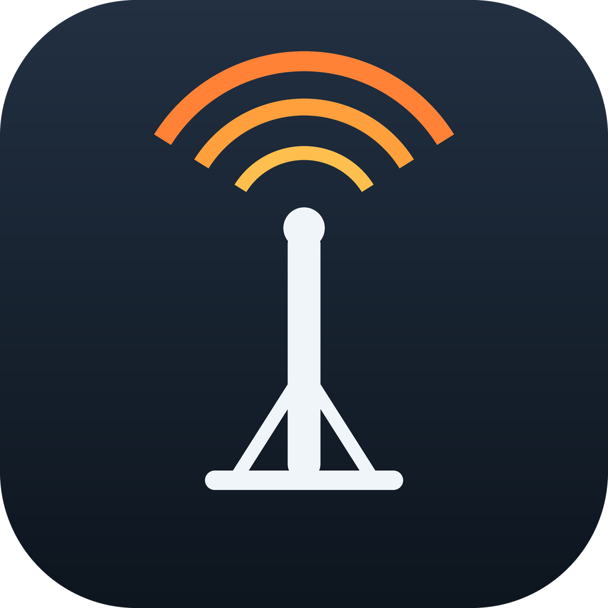

rigctld, without the terminal
A macOS menu bar app that finds your radios and runs a Hamlib daemon for each one.
One radio, two interfaces, two independent daemons.
Reads the USB descriptor over IOKit, so a radio identifies itself. An IC-7760 is recognised as Hamlib model 3092 without being told.
Profiles are keyed on the USB serial number and interface number, not the
/dev path. Move the radio to another port and it is still recognised.
A radio with several interfaces runs several daemons, each on its own TCP port — one for WSJT-X, another for logging.
Reads frequency and mode straight from the running daemon through libhamlib's NETRIGCTL backend.
Exactly one daemon owns each serial interface. Two daemons on one interface
appear to work, which is the danger: measured on an IC-7760 at 60 concurrent
reads each, about 3% of transactions came back as RPRT -9 / RPRT -20
protocol errors and the rest looked fine — and that was read-only traffic. Across two
different interfaces the same test was clean. Silent, intermittent corruption is worse
than an outright failure, so this is enforced rather than warned about.
Download for Apple Silicon macOS 26+ · ad-hoc signed
# Hamlib provides rigctld and libhamlib - required either way brew install hamlib # first launch, since the build is not notarized: # right-click the app and choose Open, or xattr -dr com.apple.quarantine "/Applications/AB6A RigCtl.app" # or build it yourself git clone https://github.com/djsincla/ab6a-rigctl cd ab6a-rigctl && ./build-app.sh --install
Installs /Applications/AB6A RigCtl.app and puts ab6a-rigctl
on your PATH. The app lives in the menu bar
with no Dock icon. Both share one ~/.config/ab6a-rigctl/profiles.json,
so they cannot disagree about your radios.
| Command | Does |
|---|---|
ab6a-rigctl | interactive manager — add radios, pick interfaces and ports |
ab6a-rigctl devices | list attached radios |
ab6a-rigctl list | saved radios and whether they are running |
ab6a-rigctl start [name|all] | a radio name starts every daemon on it |
ab6a-rigctl stop [name|all] | stop daemons |
ab6a-rigctl shm | raise the shared memory limits WSJT-X needs |
WSJT-X, fldigi and logging software connect to localhost:4532
and speak the rigctld network protocol — the daemon is the product, not an implementation
detail. An app that drove the radio in-process through libhamlib would hold the serial
interface open and give those programs nothing to connect to, while becoming a second
owner of a line that already has one.
So the app links no Hamlib library at all. It runs rigctld and speaks the rigctl protocol to it over a plain socket. That leaves it with no third-party dynamic dependencies, which is also why it signs and notarizes without a library-validation exemption.